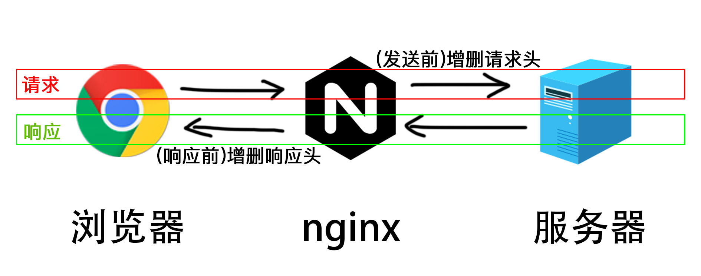

<!DOCTYPE html>
<html lang="en">

<head>
  <meta charset="UTF-8">
  <meta name="viewport" content="width=device-width, initial-scale=1.0">
  <meta http-equiv="X-UA-Compatible" content="ie=edge">
  <link rel="stylesheet" href="../../css/normalize.css">
  <link rel="stylesheet" href="../../css/styles/agate.css">
  <link rel="stylesheet" href="../../css/dark.css">
  <script src="../../js/jquery-3.2.1-compressed.js"></script>
  <script src="../../js/highlight.pack.js"></script>
  <script src="../../js/index.min.js"></script>
  <title>Nginx</title>
</head>

<body>
  <aside id="sidebar">
    <section id="catalog">
      
      目录
    </section>
  </aside>
  <div id="showCatalog">
    
  </div>
  <article id="container">
    <hgroup>
      <h1 id="title">Nginx</h1>
    </hgroup>
    <section>
      <h2>简介</h2>
      <p>
        <h3>配置文件</h3>
        <ul>
          <li>CentOS 由于是 yum 安装，所以 Nginx 配置文件目录为 /etc/nginx/nginx.conf</li>
          <li>MacOS 上 Nginx 配置文件目录为 /usr/local/etc/nginx/nginx.conf</li>
        </ul>
        <div class="tip">
          nginx 使用 # 进行单行注释。
        </div>
      </p>
    </section>
    <section>
      <h2>单位</h2>
      <p>
        <h3>大小单位</h3>
        <ul>
          <li>k 或 K：KB，千字节</li>
          <li>m 或 M：MB，兆字节</li>
        </ul>
        <h3>时间单位</h3>
        <ul>
          <li>ms：毫秒</li>
          <li>s：秒</li>
          <li>m：分钟</li>
          <li>h：小时</li>
          <li>d：天</li>
          <li>w：周 / 7 天</li>
          <li>M：月 / 30 天</li>
          <li>y：年 / 365 天</li>
        </ul>
      </p>
    </section>
    <section>
      <h2>本地文件服务器</h2>
      <p>
        使用 root 表示本地资源的位置，比如希望 127.0.0.1:8080 访问本地位置 /www/static。
        <pre><code class="nginx">
user root;
events {
  worker_connections 2048;
}
http {
  include mime.types;
  default_type application/octet-stream;
  server {
    listen 8080;
    location / {
      add_header Access-Control-Allow-Origin *; # CORS
      root /www/static;
    }
  }
}
        </code></pre>
        如果不加 include 和 default_type，nginx 会把所有资源当做 text，浏览器遇到 css 等资源就不会去解析。其中，mime.types 文件为 nginx 配置目录下自带的文件：
        <pre><code class="config">
types {
  text/html html htm shtml;
  text/css css;
  text/xml xml;
  image/gif gif;
  image/jpeg jpeg jpg;
  application/javascript js;
  application/atom+xml atom;
  application/rss+xml rss;

  text/mathml mml;
  text/plain txt;
  text/vnd.sun.j2me.app-descriptor jad;
  text/vnd.wap.wml wml;
  text/x-component htc;

  image/png png;
  image/svg+xml svg svgz;
  image/tiff tif tiff;
  image/vnd.wap.wbmp wbmp;
  image/webp webp;
  image/x-icon ico;
  image/x-jng jng;
  image/x-ms-bmp bmp;

  font/woff woff;
  font/woff2 woff2;

  application/java-archive jar war ear;
  application/json json;
  application/mac-binhex40 hqx;
  application/msword doc;
  application/pdf pdf;
  application/postscript ps eps ai;
  application/rtf rtf;
  application/vnd.apple.mpegurl m3u8;
  application/vnd.google-earth.kml+xml kml;
  application/vnd.google-earth.kmz kmz;
  application/vnd.ms-excel xls;
  application/vnd.ms-fontobject eot;
  application/vnd.ms-powerpoint ppt;
  application/vnd.oasis.opendocument.graphics odg;
  application/vnd.oasis.opendocument.presentation odp;
  application/vnd.oasis.opendocument.spreadsheet ods;
  application/vnd.oasis.opendocument.text odt;
  application/vnd.openxmlformats-officedocument.presentationml.presentation
  pptx;
  application/vnd.openxmlformats-officedocument.spreadsheetml.sheet
  xlsx;
  application/vnd.openxmlformats-officedocument.wordprocessingml.document
  docx;
  application/vnd.wap.wmlc wmlc;
  application/x-7z-compressed 7z;
  application/x-cocoa cco;
  application/x-java-archive-diff jardiff;
  application/x-java-jnlp-file jnlp;
  application/x-makeself run;
  application/x-perl pl pm;
  application/x-pilot prc pdb;
  application/x-rar-compressed rar;
  application/x-redhat-package-manager rpm;
  application/x-sea sea;
  application/x-shockwave-flash swf;
  application/x-stuffit sit;
  application/x-tcl tcl tk;
  application/x-x509-ca-cert der pem crt;
  application/x-xpinstall xpi;
  application/xhtml+xml xhtml;
  application/xspf+xml xspf;
  application/zip zip;

  application/octet-stream bin exe dll;
  application/octet-stream deb;
  application/octet-stream dmg;
  application/octet-stream iso img;
  application/octet-stream msi msp msm;

  audio/midi mid midi kar;
  audio/mpeg mp3;
  audio/ogg ogg;
  audio/x-m4a m4a;
  audio/x-realaudio ra;

  video/3gpp 3gpp 3gp;
  video/mp2t ts;
  video/mp4 mp4;
  video/mpeg mpeg mpg;
  video/quicktime mov;
  video/webm webm;
  video/x-flv flv;
  video/x-m4v m4v;
  video/x-mng mng;
  video/x-ms-asf asx asf;
  video/x-ms-wmv wmv;
  video/x-msvideo avi;
}

        </code></pre>
      </p>
    </section>
    <section>
      <h2>反向代理</h2>
      <p>
        <h3>基本使用</h3>
        使用 127.0.0.1:8080 代理 https://www.baidu.com ，当我们（客户端）访问 127.0.0.1:8080 时，nginx（代理）请求百度（上游服务器），再将请求到的结果返回给客户端。
        <pre><code class="nginx">
events {
  worker_connections 2048;
}
http {
  server {
    listen 8080;
    location / {
      proxy_pass https://www.baidu.com;
    }
  } 
}
        </code></pre>
        <h3>首部字段操作</h3>
        nginx 可以对请求字段和响应字段进行操作。
        <figure>
          
        </figure>
        <h3>读取请求头</h3>
        使用 $ + 请求头的方式来读取来自客户端的请求头，比如读取 remote_addr。
        <pre><code class="nginx">
$remote_addr
        </code></pre>
        <h3>添加请求头</h3>
        <pre><code class="nginx">
proxy_set_header Refer www.baidu.com;
        </code></pre>
        <h3>删除请求头</h3>
        <pre><code class="nginx">
proxy_set_header Refer '';
        </code></pre>
        <h3>添加响应头</h3>
        在 location 内添加配置项 add_header，比如使其允许跨域。
        <pre><code class="nginx">
add_header Access-Control-Allow-Origin *;
add_header Access-Control-Allow-Methods 'GET, POST, OPTIONS';
add_header Access-Control-Allow-Headers 'DNT,X-Mx-ReqToken,Keep-Alive,User-Agent,X-Requested-With,If-Modified-Since,Cache-Control,Content-Type,Authorization';
        </code></pre>
        <h3>移除响应头</h3>
        当 nginx 作为代理服务器时，想要移除从目标主机（比如上面的百度）设置的响应字段，可以使用 proxy_hide_header 配置项。
        <pre><code class="nginx">
proxy_hide_header 'X-Frame-Options';
        </code></pre>
        也可以先安装 headers-more-nginx-module （安装方法见<a
          href="https://github.com/openresty/headers-more-nginx-module#installation">此处</a>）模块再使用 more_clear_headers
        配置项。
        <pre><code class="nginx">
more_clear_headers 'X-Frame-Options';
        </code></pre>
        当 nginx 直接作为服务器，想要隐藏本机服务器的一些字段，可以使用 fastcgi_hide_header 配置项。
        <pre><code class="nginx">
fastcgi_hide_header 'X-Frame-Options';
        </code></pre>
        <h3>代理多个来源</h3>
        使用 server.server_name 配置项可以处理不同来源的请求，nginx 会在处理一个请求的时候，先取出请求头 Host，与 server 的 server_name 进行比较，根据优先级决定给哪个 server
        来处理。
        <pre><code class="nginx">
http {
  server {
    listen 80;
    server_name www.example.com *.example.com www.example.*;
    location / {
      # ...
    }
  }
}
        </code></pre>
        如果 Host 是 www.example.com，优先级为 www.example.com > *.example.com > www.example.*。
        <div class="tip">
          server_name 支持正则，匹配优先级最低。
        </div>
        如果没匹配到任意一个 server，那么会选择 listen 后带 default 的，如果还没有，那么会选择第一个 server。
      </p>
    </section>
    <section>
      <h2>worker 配置项</h2>
      <p>
        <h3>user</h3>
        master/worker 运行方式下，用于指定 master 进程 fork 出的 worker 进程属于哪个用户和群组。
        <pre><code class="nginx">
user username [groupname]
        </code></pre>
        <div class="tip">
          nginx 默认是 master/worker 运行方式，一个 master 进程可以 fork 若干个 worker 进程，可以添加配置项 master_process off 来关闭，这样所有请求都由 master
          进程来处理。
        </div>
        <h3>worker_processes</h3>
        nginx worker 进程最大数量，默认为 1 ，一般配置与 CPU 核数一致，然后绑定 worker 进程到不同的 CPU 来防止进程间的切换造成的消耗。
        <pre><code class="nginx">
worker_processes number | auto;
        </code></pre>
        <h3>worker_cpu_affinity</h3>
        绑定 worker 到指定 CPU 内核。
        <pre><code class="nginx">
worker_cpu_affinity CPU掩码
        </code></pre>
        比如有 4 个 CPU，0 号、1 号、2 号、3号，那么 CPU掩码 可以是 1000，表示只抢占 0 号 CPU。
        <h3>worker_priorty</h3>
        worker 进程优先级，默认为 0，可选范围为 [-20, 19]，值越小表示优先级越高，优先级高可分配到的 CPU 时间片越大。
      </p>
    </section>
    <section>
      <h2>负载均衡</h2>
      <p>
        <h3>event.accept_mutex</h3>
        accept_mutex 是 nginx 的负载均衡锁，默认为打开（on），以保证连接 worker 连接负载均衡，设置为关闭（off）后无法保证负载均衡。
        <h3>event.accept_mutex_delay</h3>
        当一个 worker 试图去获得 accept 锁但没得到，那么将等待 accept_mutex_delay 毫秒后才会再次请求，默认为 500 毫秒。
        <h3>event.lock_file</h3>
        当编译 nginx 的程序、操作系统等原因导致 nginx 不支持原子锁，nginx 会采用文件来实现原子锁，该配置项就是指定 lock 文件的路径。
        <h3>events.worker_connections</h3>
        每个 nginx worker 进程可同时处理的最大连接数。
      </p>
    </section>
    <section>
      <h2>性能优化</h2>
      <p>
        <h3>listen xxx deferred</h3>
        listen 后追加 deferred 参数，表示 worker 和客户端即使完成了 TCP 三次握手也不会马上建立连接，只有客户端发来第一个数据时才会唤醒 worker 处理这里连接。
      </p>
    </section>
    <section class="refer">
      <h2>参考文献</h2>
      <p>
        <div>[1] github more_clear_headers <a
            href="https://github.com/openresty/headers-more-nginx-module">https://github.com/openresty/headers-more-nginx-module</a>
        </div>
      </p>
    </section>
  </article>
</body>

</html>